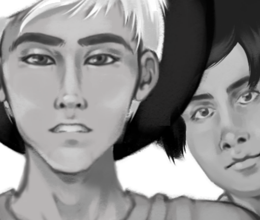
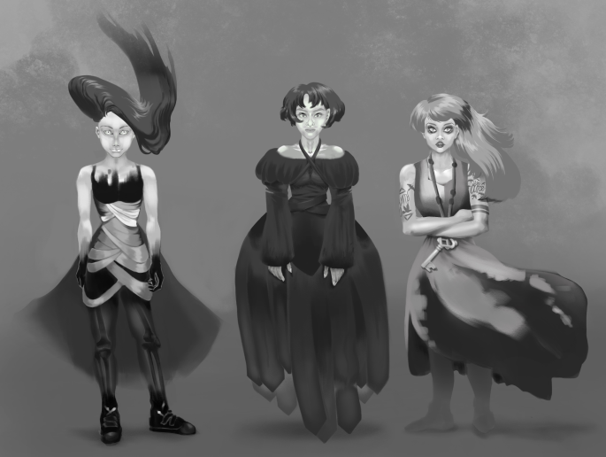
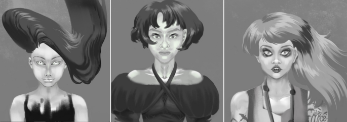
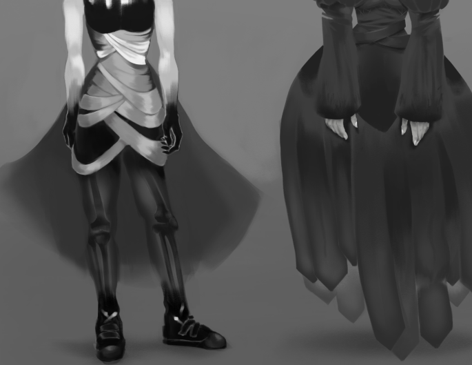
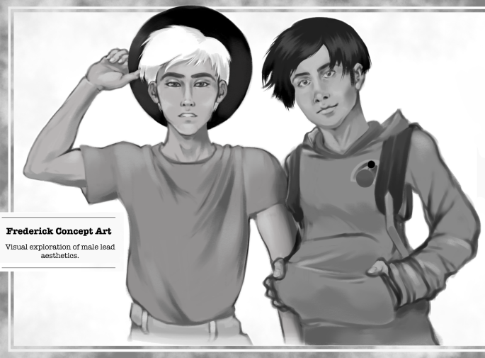
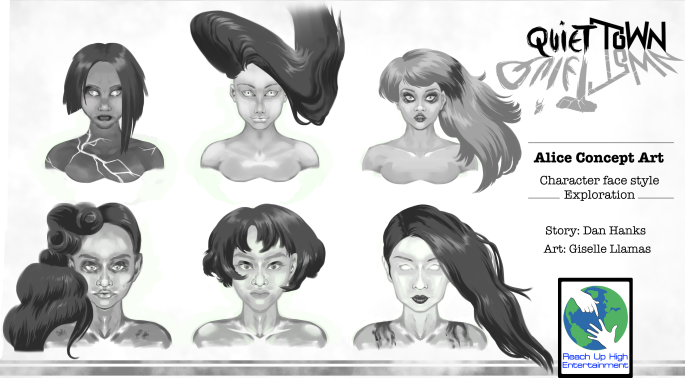
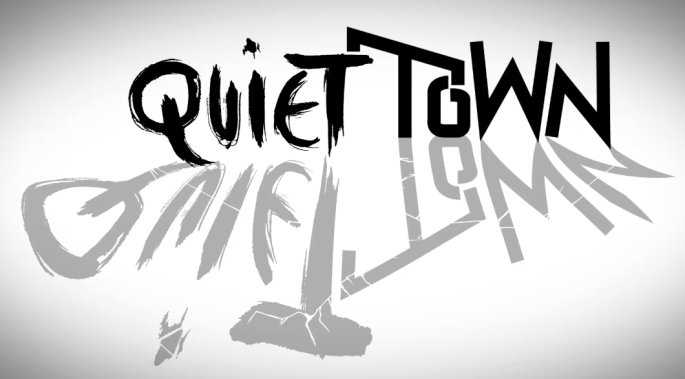
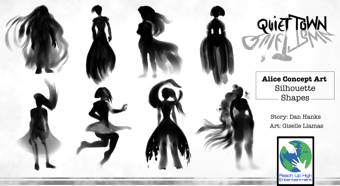

Este misterioso proyecto para el cual terminé haciendo los diseños de personaje se llama 'Quiet Town' y es para un piloto de el género de suspenso con toques sobrenaturales. La idea es que los protagonistas fueran adolescentes, y uno de ellos es una chica fantasma.
Ciertamente fue una de las varias veces en las que trabajé para este estudio, el cual estaba interesado en crear conceptos para luego llevarlos a cabo dentro de ya sea películas, series o cómics. En este caso también diseñé el logo para este proyecto, el cual tiene una estética sombría y siniestra, que habla acerca de la naturaleza de la narrativa visual, la cual está presente en los conceptos de personajes en tonalidades de grises.
2017
CONCEPTOS DE PERSONAJE
Cliente: Reach Up High Entertainment (GB)






